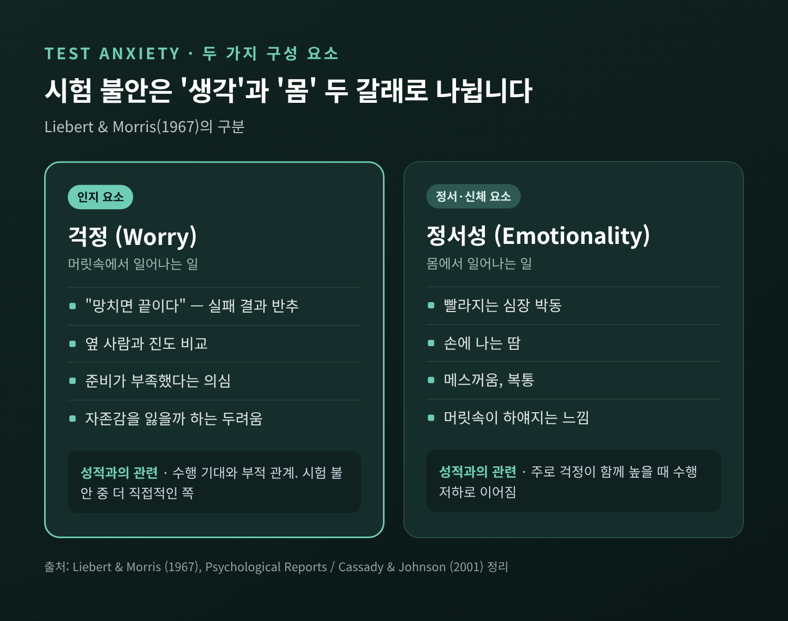
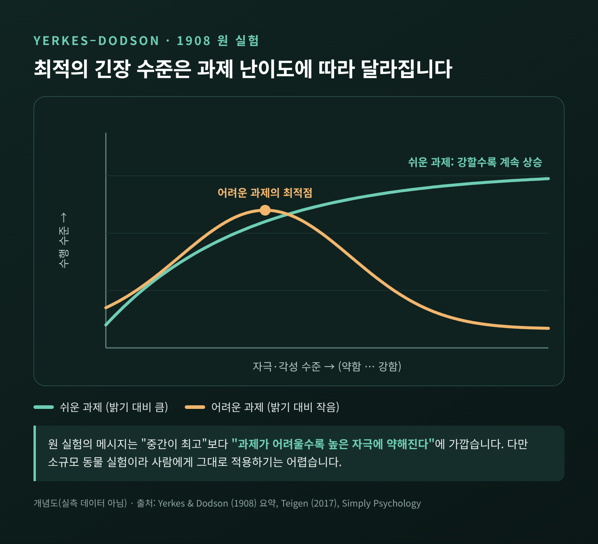
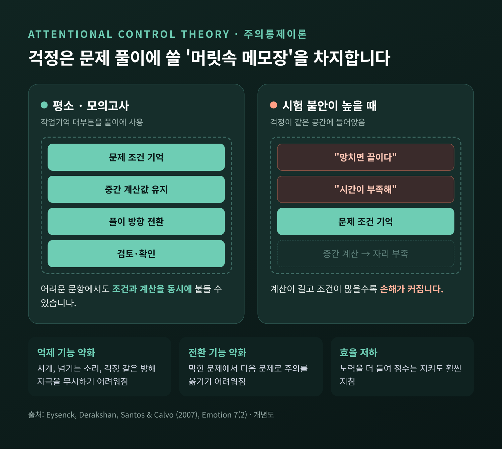
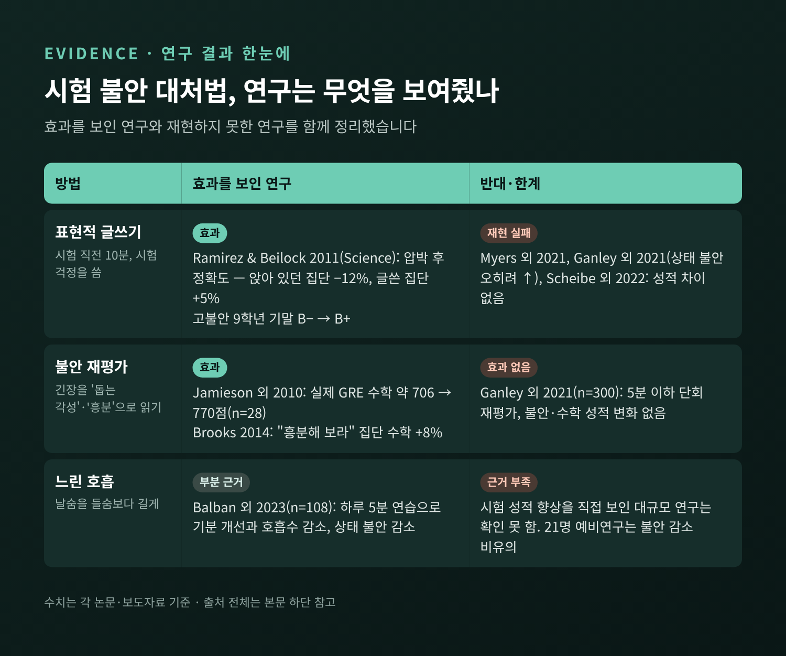
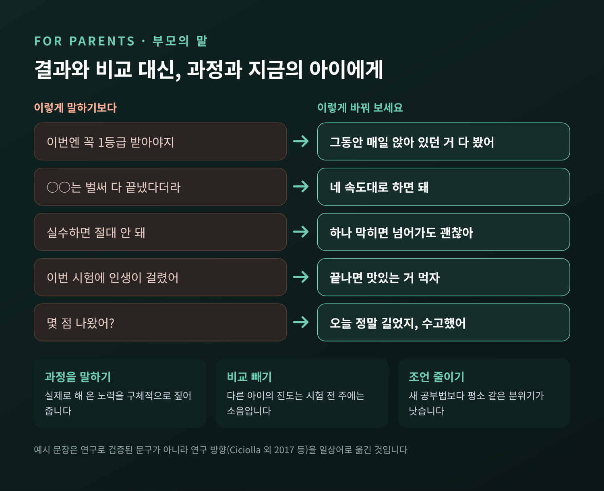

수험생 시험 불안의 원리 — 긴장은 왜 실력 발휘를 막을까

2027학년도 수능이 11월 19일, 이제 며칠 앞으로 다가왔습니다. 이번 글에서는 시험 직전의 긴장이 어떻게 실력 발휘를 막는지, 그 원리를 연구로 정리해 보겠습니다. 그리고 학생과 부모가 오늘부터 할 수 있는 일을 구체적으로 적어보겠습니다.
먼저 요약부터 드립니다.
- 시험 불안은 '머릿속 걱정'과 '몸의 긴장' 두 갈래로 나뉘며, 성적과 더 밀접한 쪽은 걱정입니다.
- 걱정은 문제 풀이에 써야 할 작업기억을 차지합니다. 어려운 문제일수록 손해가 커집니다.
- 걱정을 글로 꺼내기, 긴장을 '준비 신호'로 다시 읽기, 날숨을 길게 하는 호흡이 도움이 될 수 있습니다. 다만 연구마다 결과가 엇갈리므로 만능은 아닙니다.
- 부모의 말은 결과보다 과정에, 비교보다 지금 이 아이에게 향하는 편이 낫습니다.
■ 시험 불안은 두 갈래로 나뉩니다
가상의 고3 학생 한 명을 떠올려 보겠습니다. 모의고사에서는 수학 마지막 문제까지 손을 댑니다. 그런데 실전에서는 첫 페이지부터 손이 떨리고, 아는 공식이 떠오르지 않습니다. 많은 수험생이 겪는 장면입니다.
심리학에서는 이런 불안을 오래전부터 두 요소로 나눠 봤습니다. 1967년 리버트(Liebert)와 모리스(Morris)는 시험불안 질문지를 걱정(worry)과 정서성(emotionality)으로 구분했습니다.
걱정은 생각의 영역입니다. "이번에 망치면 끝이다", "옆 사람은 벌써 넘겼네", "준비가 부족했어" 같은 문장들입니다. 정서성은 몸의 영역입니다. 심장이 빨리 뛰고, 손에 땀이 나고, 속이 메스껍고, 머릿속이 하얘집니다.
두 사람의 첫 연구에서 걱정은 시험 결과에 대한 기대와 부적 관계를 보였습니다. 반면 정서성은 기대와 관련이 없었습니다. 이후 연구들도 몸의 긴장은 주로 걱정이 함께 높을 때 수행 저하로 이어진다고 정리합니다. 떨림 자체보다, 떨림에 붙는 생각이 더 문제라는 뜻입니다.

얼마나 흔할까요. 추정치는 측정 방법에 따라 다릅니다. 학령기 아동의 약 20%가 높은 수준의 불안을 보인다는 연구가 있고, 25~40%로 보는 연구자도 있습니다. 시험 불안과 성적의 상관은 메타분석 평균으로 대략 −0.20에서 −0.30 사이입니다. 무시할 수는 없지만, 성적을 결정짓는 단 하나의 요인도 아닌 셈입니다.
■ '적당한 긴장'이라는 말의 진짜 의미
긴장과 성적을 다루는 이야기에는 늘 한 장의 그래프가 따라옵니다. 긴장이 너무 낮아도, 너무 높아도 성과가 떨어지고 중간이 가장 좋다는 거꾸로 된 U자 곡선, 이른바 여키스–도슨 법칙입니다.
원 실험은 1908년, 생쥐를 대상으로 했습니다. 생쥐가 흰 상자와 검은 상자를 구별하도록 학습시키며, 흰 상자에 들어가면 약한 전기 자극을 줬습니다. 흥미로운 것은 과제 난이도에 따라 결과가 달랐다는 점입니다.
- 두 상자의 밝기 차이가 커서 쉬운 과제에서는 가장 강한 자극에서 가장 빨리 배웠습니다.
- 밝기 차이가 작아 어려운 과제에서는 중간 세기의 자극이 가장 좋았습니다.
즉 원래 메시지는 "중간이 최고"보다 "과제가 어려울수록 높은 자극에 약해진다"에 가깝습니다.

한계도 분명합니다. 당시에는 '각성'이나 '스트레스'라는 개념조차 없었고, 실험 규모도 작았습니다. 교과서들은 난이도 조건을 빼고 하나의 매끈한 종 모양으로 단순화해 왔습니다. 원자료를 다시 분석한 연구는 경험적 지지가 약하다고 봤고, 노르웨이의 심리학자 테이겐(Teigen)은 이 법칙을 "모든 계절을 위한 법칙"이라 꼬집었습니다. 어떤 데이터든 곡선의 한쪽에 끼워 맞출 수 있어 반증이 어렵다는 비판입니다. 2021년 대학생 730명을 분석한 연구에서도 각성과 수행 사이의 거꾸로 된 U자 관계는 확인되지 않았습니다.
그래서 저는 이 곡선을 정밀한 법칙보다 하나의 힌트로 읽기를 권합니다. 수능처럼 어려운 문제가 섞인 시험에서는 긴장을 '더 끌어올리는' 전략이 득이 되기 어렵다는 힌트입니다.
■ 걱정은 작업기억을 잠식합니다
그렇다면 걱정은 구체적으로 어떻게 실력을 가릴까요. 가장 널리 쓰이는 설명은 아이젱크(Eysenck) 등이 2007년에 정리한 주의통제이론입니다.
우리 머리에는 두 가지 주의 체계가 있습니다. 하나는 목표를 향해 주의를 끌고 가는 '하향식' 체계, 다른 하나는 눈에 띄는 자극에 끌려가는 '상향식' 체계입니다. 불안은 앞의 것을 약하게 하고 뒤의 것을 강하게 만듭니다. 시험지 대신 시계, 옆자리의 넘기는 소리, "망하면 어쩌지"라는 생각에 주의가 쏠리는 이유입니다.
특히 두 가지 기능이 흔들립니다.
- 억제 — 방해되는 생각과 자극을 무시하는 힘
- 전환 — 이 문제에서 저 문제로, 계산에서 검토로 주의를 옮기는 힘
걱정은 작업기억, 즉 머릿속 메모장의 한정된 공간을 차지합니다. 수학 문제에서 중간 계산값을 붙들고 있어야 할 자리에 걱정이 들어앉는 셈입니다. 그래서 계산이 길고 조건이 많은 어려운 문항일수록 손해가 커집니다.

이 이론에는 한 가지 더 눈여겨볼 대목이 있습니다. 불안한 학생은 노력을 더 들여 정확도를 지키는 경우가 많습니다. 점수는 비슷하게 나와도 효율이 떨어져 훨씬 지칩니다. "시험만 보면 진이 빠진다"는 말에는 이런 배경이 있습니다.
다른 시각도 함께 소개하겠습니다. 2022년 의대생 309명을 추적한 연구에서는 모의고사로 잰 지식 수준을 고려하자 시험 불안이 실제 시험 성적을 따로 예측하지 못했습니다. 대신 불안이 높은 학생은 준비 기간 동안 실력이 늘어나는 폭이 더 작았습니다. 불안이 시험장에서만이 아니라 공부하는 과정 자체를 흔들 수 있다는 해석입니다. 시험 당일의 기술만큼, 평소의 공부 리듬을 지키는 일이 중요한 이유입니다.
■ 걱정을 종이에 내려놓기 — 표현적 글쓰기
2011년 『사이언스』에 실린 라미레즈(Ramirez)와 베일록(Beilock)의 연구는 이 분야에서 가장 자주 인용됩니다.
대학생 20명에게 짧은 수학 시험을 두 번 보게 했습니다. 두 번째 시험 전에는 압박을 줬습니다. 잘하면 돈을 주고, 팀원의 보상이 걸려 있으며, 풀이 과정을 녹화해 수학 교사가 본다고 알렸습니다. 그리고 절반은 시험 직전 10분 동안 시험에 대한 생각과 감정을 솔직하게 썼고, 나머지는 조용히 앉아 있었습니다.
- 그냥 앉아 있던 집단: 정확도 12% 하락
- 글을 쓴 집단: 정확도 5% 향상
미국 고등학교 첫해(9학년) 학생들의 첫 생물 기말고사에서도 비슷한 실험을 했습니다. 불안이 높은 학생 중 시험 직전 자기 감정을 쓴 학생은 평균 B+, 쓰지 않은 학생은 B−였습니다. 글을 쓴 고불안 학생은 불안이 낮은 친구들과 비슷한 성적을 냈습니다. 연구진은 무관한 주제가 아니라 시험에 관한 걱정을 쓰는 것이 핵심이었다고 밝혔습니다.
다만 이 결과를 그대로 믿기에는 조심스러운 부분이 있습니다. 이후 대학생을 대상으로 한 여러 연구가 같은 효과를 재현하지 못했습니다.
- 2021년 대학 심리학 수업에서 네 번의 시험에 적용한 연구: 불안 수준도, 성적도 달라지지 않았습니다.
- 같은 해 대학생 300명 연구: 글쓰기는 수학 성적에 영향이 없었고, 오히려 상태 불안이 더 높게 보고됐습니다.
- 2022년 168명 재현 연구: 글쓰기 집단의 정확도가 다른 집단보다 높지 않았습니다.
예전엔 "시험 전에 10분만 쓰면 성적이 오른다"고 소개되곤 했습니다. 지금은 "불안이 높은 학생이 시도해 볼 만한, 비용이 적은 방법" 정도로 보는 편이 정확합니다. 써 봤더니 마음이 더 어지럽다면 억지로 이어갈 필요는 없습니다.
■ 긴장을 '준비 신호'로 다시 읽기
두 번째 방법은 불안 재평가입니다. 떨림을 없애려 애쓰기보다 그 떨림에 붙이는 이름을 바꾸는 것입니다.
제이미슨(Jamieson) 연구팀은 2010년 미국 대학원 입학시험(GRE)을 준비하는 학생들에게 이런 안내문을 읽게 했습니다. 요지는 이렇습니다. "시험 중 불안하면 망친다고들 생각하지만, 각성은 수행을 해치지 않고 오히려 도울 수 있다. 불안을 느끼면, 그 각성이 잘하도록 돕고 있다고 떠올려라."
- 연습 시험 수학 점수(200~800점): 재평가 집단 약 739점, 비교 집단 약 684점
- 1~3개월 뒤 실제 GRE 수학: 재평가 집단 770점, 비교 집단 약 706점
- 언어 영역은 차이가 없었습니다.
눈여겨볼 점은 재평가 집단의 침 속 교감신경 지표가 오히려 더 올라갔다는 사실입니다. 긴장이 줄어서가 아니라, 같은 긴장을 다르게 써서 점수가 오른 것입니다. 다만 최종 분석 인원이 28명으로 적었다는 점은 기억해 둘 만합니다.
브룩스(Brooks)의 2014년 연구도 비슷한 방향입니다. 188명에게 어려운 수학 문제를 풀게 하면서 "흥분해 보라"는 문장을 읽은 집단은 "침착하라"를 읽은 집단과 비교 집단보다 평균 8% 높은 점수를 냈습니다. 불안과 흥분은 둘 다 심장이 빨리 뛰는 상태입니다. 높아진 몸을 억지로 가라앉히기보다 "지금 몸이 시험 볼 준비를 하는구나"로 옮겨 가는 편이 쉬울 수 있습니다.
이 방법 역시 반대 결과가 있습니다. 앞서 소개한 대학생 300명 연구에서는 '도전'으로 읽기, '흥분'으로 읽기 모두 불안이나 성적에 효과가 없었습니다. 몇 분짜리 단회 개입의 효과는 상황에 따라 달라진다고 보는 편이 맞겠습니다.

■ 몸의 경보를 낮추는 호흡
정서성, 즉 몸의 긴장에는 호흡이 가장 손쉬운 도구입니다. 요점은 날숨을 들숨보다 길게 하는 것입니다.
2023년 스탠퍼드 연구팀은 성인 108명에게 하루 5분씩 28일 동안 서로 다른 호흡법과 명상을 하게 했습니다. 날숨을 길게 늘이는 '주기적 한숨' 방식이 명상보다 긍정 정서를 더 높이고 호흡수를 더 낮췄습니다. 상태 불안은 호흡법과 명상 모두에서 줄었습니다. 시험 앞에서 불안이 큰 대학생 21명에게 분당 15회 안팎의 호흡을 5~6회로 늦추도록 연습시킨 예비 연구도 있습니다. 혈압은 유의하게 내려갔지만, 불안 감소는 통계적으로 확실하지 않았습니다.
솔직히 말씀드리면, 느린 호흡이 시험 점수를 올린다는 대규모 근거는 아직 찾지 못했습니다. 그래도 몸의 경보를 낮추는 데에는 근거가 있습니다. 시험지를 받기 전, 또 막히는 문제 앞에서 서너 번 길게 내쉬는 것만으로 충분합니다.
■ 시험 전날과 당일, 이렇게 보내기
연구 결과를 바탕으로 수험생의 전날과 당일을 정리하면 이렇습니다.
전날
- 새로운 내용보다 익숙한 내용을. 오답 노트와 자주 틀린 유형을 가볍게 훑는 정도가 좋습니다.
- 잠을 지킵니다. 미국수면의학회는 13~18세에게 하루 8~10시간의 수면을 권합니다. 약 36시간 깨어 있던 사람이 새로 본 내용을 19%가량 덜 기억했다는 실험도 있습니다. 밤샘은 마지막 날 가장 손해 보는 선택입니다.
- 평소 리듬을 유지합니다. 갑자기 일찍 자려고 하면 오히려 잠이 안 옵니다. 그 주 내내 같은 시각에 자고 일어나는 편이 낫습니다.
당일 아침과 시험장
- 걱정을 꺼내 둡니다. 시험장에 들어가기 전, 짧게 메모하듯 걱정을 적어 보는 것도 방법입니다. 마음이 더 복잡해지면 그만둡니다.
- 이름을 바꿉니다. 심장이 빨리 뛰면 "몸이 준비를 하고 있다"고 한 번 말해 봅니다.
- 길게 내쉽니다. 시험지를 받기 전, 그리고 막히는 문항에서 날숨을 길게 서너 번.
- 막히면 넘어갑니다. 작업기억이 걱정에 잠식된 상태에서 한 문제를 붙들수록 손해가 커집니다. 표시해 두고 다음 문제로 옮겨 가는 것도 '전환' 기능을 되살리는 일입니다.
- 지난 교시는 닫습니다. 쉬는 시간에 답을 맞춰 보는 일은 다음 교시의 작업기억을 미리 쓰는 셈입니다.
■ 부모의 말이 만드는 차이
수험생의 긴장을 다룰 때 부모의 역할은 생각보다 큽니다.
2017년 미국 중학생 506명을 조사한 연구가 있습니다. 부모가 친절이나 배려보다 성적을 지나치게 중시한다고 느낀 아이들은 심리 상태가 더 나빴습니다. 오히려 성취 강조가 낮거나 중립적인 집단이 학업 성적도 높고 자존감도 높았습니다. 가장 나쁜 조합은 어머니의 높은 성취 강조와 아이가 느끼는 높은 비판이 겹칠 때였습니다. 비판이 낮으면 그 위험은 두드러지지 않았습니다.
인도 고교생 연구에서는 부모의 성취 압박을 느낀 학생이 3분의 2를 넘었고, 가장 흔한 형태가 반 1등과의 비교였다고 합니다. 비교의 말은 그대로 아이의 '걱정' 목록에 옮겨 적힙니다.
그렇다고 말을 아예 아낄 필요는 없습니다. 방향만 바꾸면 됩니다.

이 말들은 연구에서 그대로 검증된 문장이 아니라, 위 연구들의 방향을 일상어로 옮겨 본 예시입니다. 핵심은 세 가지입니다.
- 결과 대신 과정을 말합니다. 아이가 실제로 해 온 노력을 구체적으로 짚어 줍니다.
- 비교를 빼고 지금의 아이를 봅니다. 다른 집 아이의 진도는 시험 전 주에는 소음일 뿐입니다.
- 시험 직전에는 조언을 줄입니다. 새로운 공부법이나 걱정 섞인 당부보다 따뜻한 식사와 평소 같은 분위기가 더 큰 도움이 됩니다.
■ 시험이 끝난 뒤의 대화
시험이 끝나면 점수보다 먼저 아이의 하루를 물어 주시길 권합니다. "몇 점 나왔어?"보다 "오늘 하루 정말 길었지, 수고했어"가 먼저입니다.
결과가 기대에 못 미쳤다면 이런 순서가 도움이 됩니다.
- 감정을 먼저 받아 줍니다. "속상하겠다"는 한 마디로 충분합니다. 분석은 며칠 뒤에 해도 늦지 않습니다.
- 결과와 사람을 분리합니다. 점수는 그날의 한 측정값이지, 아이의 가치가 아닙니다.
- 다음 선택지를 함께 봅니다. 성적이 나오면 지원 전략, 재도전 여부를 아이가 주도하도록 옆에서 정보를 함께 찾습니다.
결과가 좋았다면 그것대로 과정을 함께 짚어 주시면 됩니다. "잘했다"에 "그동안 버틴 덕분"을 덧붙이는 것만으로도 다음 시험의 불안을 덜어 줍니다.
■ 혼자 감당하기 어렵다면
시험 불안은 대부분 시험이 끝나면 가라앉습니다. 하지만 다음과 같은 상태가 몇 주 넘게 이어진다면 전문가와 이야기해 보시길 권합니다.
- 갑자기 숨이 막히고 심장이 터질 듯한 공황 증상이 반복될 때
- 잠들기 어렵거나 자주 깨는 불면이 계속될 때
- 식욕이 크게 줄고 체중이 빠질 때
- 시험이 끝난 뒤에도 무기력하고 우울한 기분이 가시지 않을 때
도움받을 수 있는 곳은 가까이 있습니다.
- 학교 상담교사·Wee클래스: 학교 안 상담실입니다. 필요하면 교육지원청의 Wee센터로 연계됩니다.
- 청소년상담 1388: 365일 24시간, 9~24세 청소년과 보호자 모두 무료로 이용할 수 있습니다. 전화(휴대전화는 지역번호+1388), 문자 1388, 카카오톡 '청소년상담1388' 채널로 연결됩니다.
- 정신건강 위기상담전화 1577-0199: 24시간 우울·불안 등 정신건강 상담.
- 자살예방상담전화 109: 극단적인 생각이 들 때 24시간 연결됩니다.
- 증상이 심하면 정신건강의학과 전문의 진료를 받는 것도 자연스러운 선택입니다.
정리하면 이렇습니다. 시험 불안은 의지가 약해서 생기는 것이 아니라, 걱정이 머릿속 작업 공간을 차지하면서 생기는 현상입니다. 걱정을 꺼내 놓고, 긴장에 다른 이름을 붙이고, 숨을 길게 내쉬는 일은 그 공간을 조금이라도 되찾으려는 시도입니다. 어느 방법도 모든 사람에게 통하지는 않습니다. 그래서 내 아이, 나 자신에게 맞는 방법을 시험 전에 미리 한 번 연습해 두는 편이 좋습니다.
"떨림은 망칠 신호가 아니라, 몸이 준비하고 있다는 신호입니다."
수능 날 아침 무슨 말을 해 줘야 할지 묻는 분이 계신다면, 저는 점수 이야기 대신 이 한 문장을 건네시라고 답하겠습니다.
출처
- Ramirez, G., & Beilock, S. L. (2011). Writing about testing worries boosts exam performance in the classroom. Science, 331(6014), 211–213. — University of Chicago News, ScienceDaily
- Liebert, R. M., & Morris, L. W. (1967). Cognitive and emotional components of test anxiety. Psychological Reports, 20(3), 975–978. — Scilit
- Eysenck, M. W., Derakshan, N., Santos, R., & Calvo, M. G. (2007). Anxiety and cognitive performance: Attentional control theory. Emotion, 7(2), 336–353. — PDF
- Jamieson, J. P., Mendes, W. B., Blackstock, E., & Schmader, T. (2010). Turning the knots in your stomach into bows: Reappraising arousal improves performance on the GRE. Journal of Experimental Social Psychology. — Harvard DASH
- Brooks, A. W. (2014). Get excited: Reappraising pre-performance anxiety as excitement. Journal of Experimental Psychology: General. — APA 보도자료, PubMed
- Teigen, K. H. (2017). En artikkel for alle årstider. Tidsskrift for Norsk psykologforening. — PDF / Simply Psychology, Yerkes-Dodson Law
- Schillinger, F. L., et al. (2021). Revisiting the role of worries in explaining the link between test anxiety and test performance. Educational Psychology Review, 33, 1887–1906. — Springer
- Theobald, M., Breitwieser, J., & Brod, G. (2022). Test anxiety does not predict exam performance when knowledge is controlled for. Psychological Science, 33(12), 2073–2083. — PDF
- Myers, S. J., Davis, S. D., & Chan, J. C. K. (2021). Does expressive writing or an instructional intervention reduce the impacts of test anxiety in a college classroom? Cognitive Research: Principles and Implications, 6, 44. — UNF
- Ganley, C. M., et al. (2021). The effectiveness of brief anxiety interventions on math test performance. Journal of Numerical Cognition, 7(1), 4–19. — Leeds Trinity
- Scheibe, D. A., Was, C., & Thompson, C. A. (2022). Does expressive writing blunt the effects of math anxiety on math performance? CogSci Proceedings, 44. — eScholarship
- Balban, M. Y., et al. (2023). Brief structured respiration practices enhance mood and reduce physiological arousal. Cell Reports Medicine. — Stanford
- Ovadia-Blechman, Z., et al. (2022). Reducing test anxiety by device-guided breathing: A pilot study. Frontiers in Psychology, 13. — PMC
- American Academy of Sleep Medicine, 청소년 수면 시간 권고 — AASM, Sleep Education
- Yoo, S.-S., et al. (2007). Nature Neuroscience 연구 소개 — BPS Research Digest
- Ciciolla, L., et al. (2017). When mothers and fathers are seen as disproportionately valuing achievements. Journal of Youth and Adolescence. — 링크 / 부모 압박 연구 정리: Spiegeloog
- 2027학년도 수능 일정 — 이투데이, 헤럴드경제
- 상담 기관 — 복지로: 청소년상담 1388, 서울시: 정신건강 위기상담전화, 주간경향: 자살예방상담전화 109